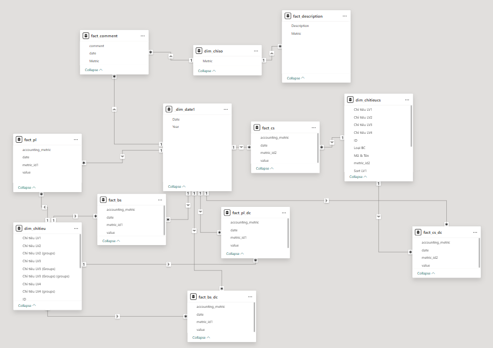

Báo cáo Quản trị tài chính
1. Tổng Quan
Dự án xây dựng hệ thống nhập liệu bằng SharePoint List kết hợp với báo cáo phân tích trên Power BI, giúp theo dõi tình hình kinh doanh, tài chính và dòng tiền của doanh nghiệp. Hệ thống bao gồm hai phần chính:
- Báo cáo thuế: Theo dõi các chỉ số tài chính phục vụ công tác khai báo thuế theo từng năm.
- Báo cáo quản trị: Tổng hợp và phân tích tình hình tài chính, hỗ trợ ra quyết định quản lý.
2. Dataset
Hệ thống dữ liệu được thiết lập thông qua SharePoint List, nơi người dùng nhập liệu trực tiếp. Power BI kết nối với dữ liệu này để tổng hợp và trực quan hóa thông tin.
Data Schema Power BI
- Báo cáo thuế
- Báo cáo quản trị
3. Dashboard
Báo cáo gồm nhiều phần, tập trung vào các khía cạnh tài chính cốt lõi:
- Kết quả kinh doanh: Phân tích doanh thu, chi phí, lợi nhuận theo thời gian.
- Bảng cân đối kế toán: Theo dõi tài sản và nguồn vốn.
- Dòng tiền: Giám sát lưu chuyển tiền tệ và cơ cấu dòng tiền.
- Chỉ số tài chính: Đánh giá 20 chỉ số quan trọng hỗ trợ quản lý.
- Thiết lập mục tiêu: So sánh kết quả thực tế với kế hoạch đặt ra.